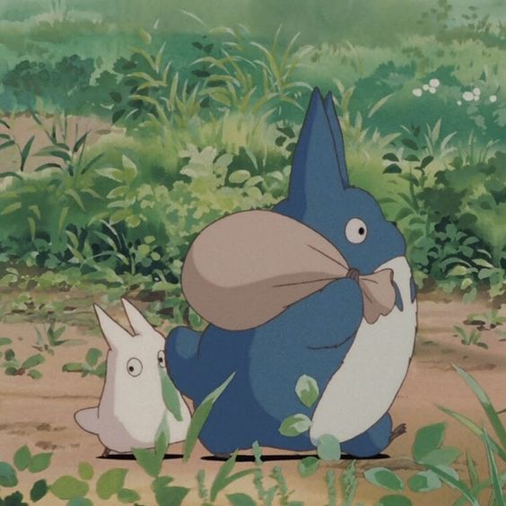
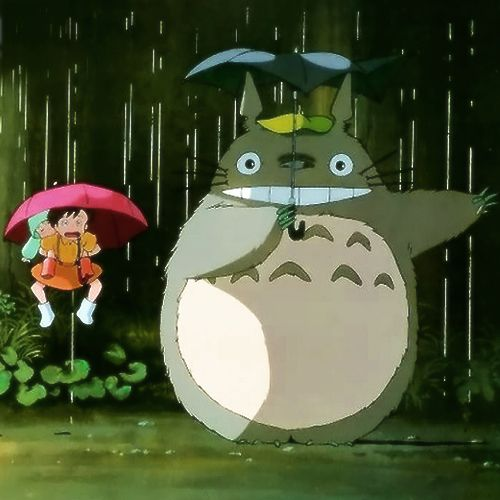
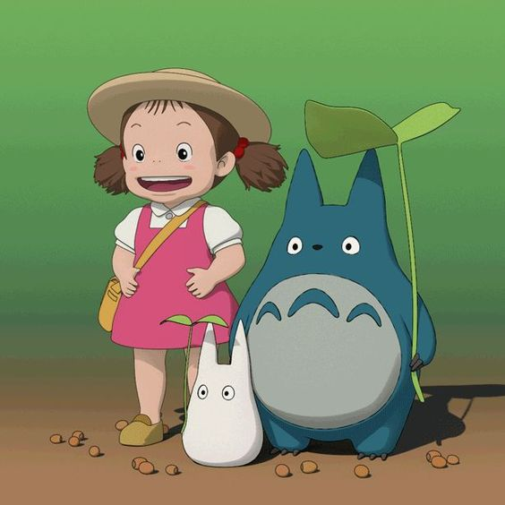
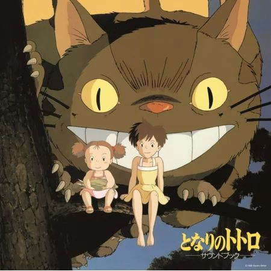

Esta historia animada del director Hayao Miyazaki sigue a las estudiantes y hermanas Satsuke y Mei mientras se establecen en su casa de campo con su padre y esperan a que su madre se recupere de una enfermedad en un hospital del área. Cuando las hermanas exploran su nueva casa, descubren y hacen amistad con unos duendes juguetones, y en el bosque cercano encuentran a una enorme criatura conocida como Totoro.
   Satsuki y Mei son dos niñas que se mudan al campo junto con su padre, un profesor de universidad. Padre e hijas comienzan a vivir en una vieja casa campestre, cercana al hospital donde la madre de las niñas trata de recuperarse de una grave enfermedad.
El nuevo hogar de las pequeñas esconde nuevos y emocionantes misterios, entre ellos, la presencia de unas pequeñas y oscuras criaturas del polvo que habitan la casa.
Las niñas conocerán también a Totoro, una gigantesca y simpática criatura que vive en el bosque que rodea su nuevo hogar.